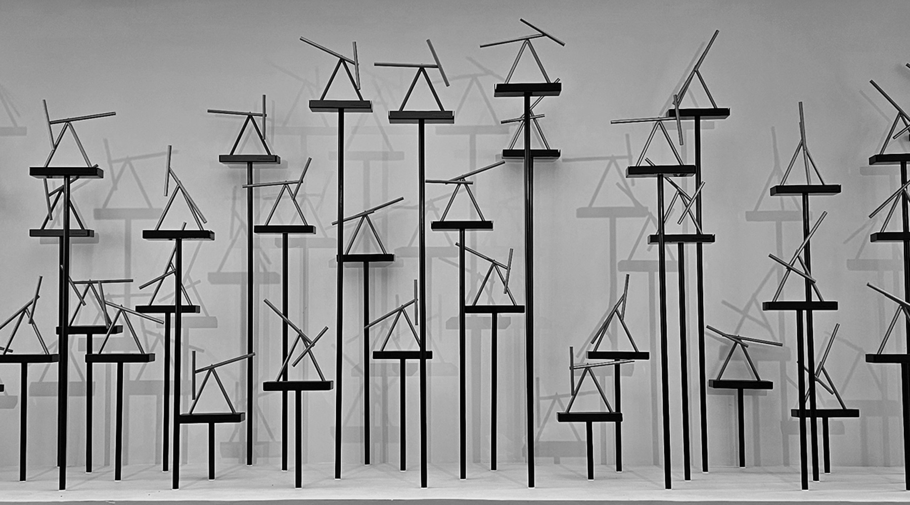
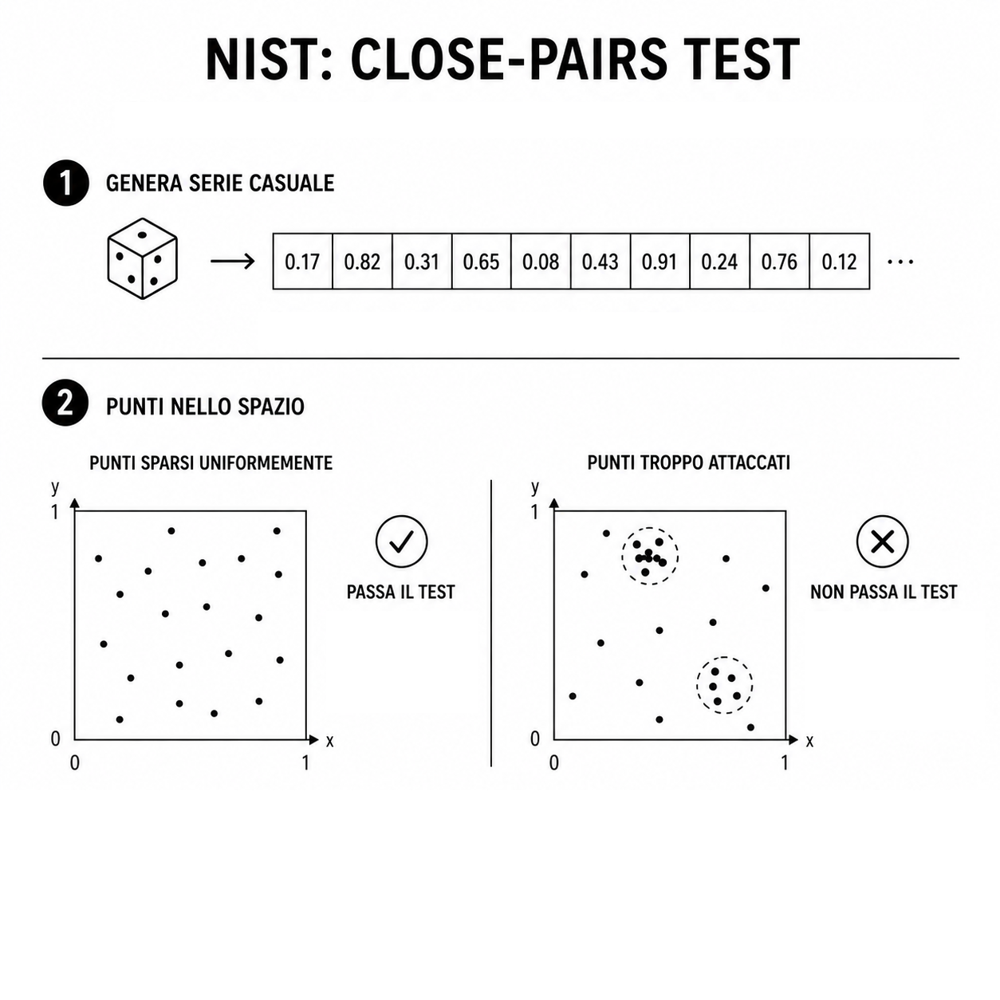
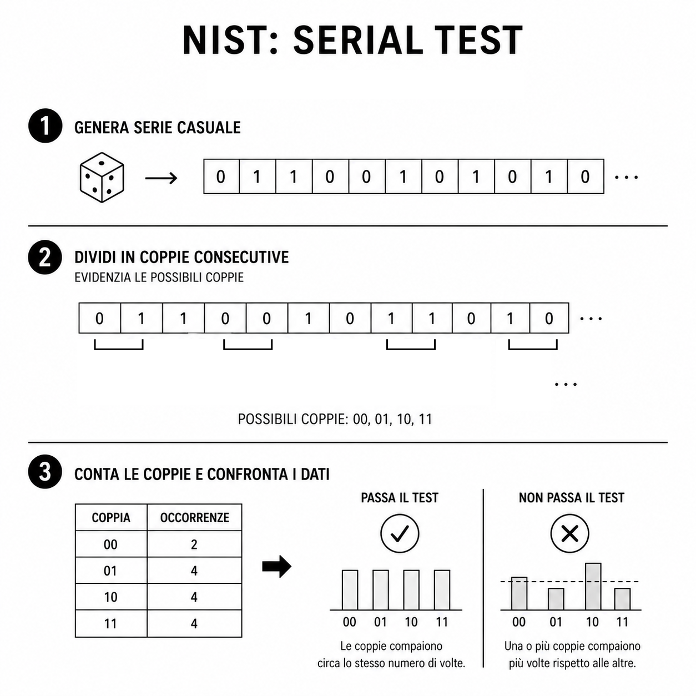
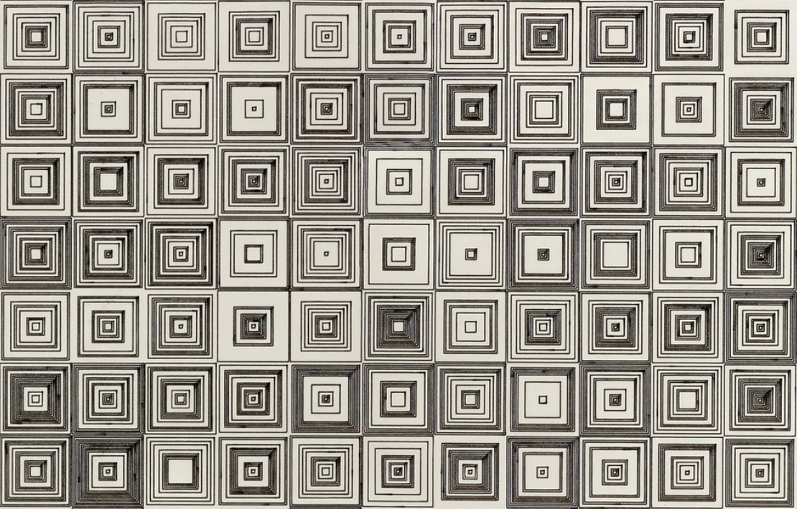

1: Concetto di casualità e imprevedibilità
In termini matematici, una sequenza casuale è tale quando ogni valore ha la
stessa probabilità di essere scelto ed è statisticamente indipendente dagli altri.
L’evoluzione di questo concetto mostra come l’uomo abbia progressivamente cercato
di comprendere, riprodurre e utilizzare l’imprevedibilità del mondo.
Il concetto di casualità e imprevedibilità affascina l’uomo fin dall’antichità,
quando strumenti come dadi e sorteggi venivano utilizzati per prendere decisioni
o interpretare la volontà divina.
Negli anni ’40 la necessità di eseguire simulazioni complesse porta alla creazione
di strumenti capaci di produrre rapidamente numeri apparentemente casuali.
Nel corso del tempo il processo è stato velocizzato permettendone l'utilizzo
su larga scala, di fatto tali generatori sono principalmente utilizzati per:
- Simulazioni.
- Tecniche di campionamento statistico.
- Ambito crittografico.
- Intelligenza artificiale.
2: Funzioni pseudo-random
Le funzioni pseudo-random sono strumenti fondamentali nell’informatica e nel design
computazionale:
consentono di creare sistemi complessi, in grado di generare sequenze di numeri apparentemente casuali, con proprietà statistiche simili a quelle di
fenomeni casuali, ma che in realtà sono determinati da regole matematiche precise
in modo controllato e riproducibile.
Queste sequenze sono dette pseudo-casuali, in quanto generate da un algoritmo
deterministico, ovvero una procedura che, ricevendo un input, restituisce sempre
lo stesso output.
Tutto dipende dal Seed (seme), cioè il valore iniziale da cui parte la
generazione
della sequenza.
Di conseguenza un seme mal scelto può causare sequenze prevedibili
(lo stesso seed produce sempre la stessa sequenza).
Si parla di periodicità in quanto gli algoritmi presentano uno stato interno
finito,
dunque dopo un certo numero di interazioni la sequenza si ripete.

3: Le categorie
I generatori casuali si distinguono in due famiglie principali, ciascuna con caratteristiche diverse in termini di velocità, riproducibilità e sicurezza.
TRNG (True-Random Number Generator)
Generano numeri casuali basandosi su fenomeni fisici imprevedibili, come rumore
elettronico o variazioni termiche. Essendo aperiodici, sono lenti ma
molto più adatti alla crittografia.
Fasi:
acquisizione del segnale → amplificazione e digitalizzazione → post-elaborazione

Nella sua sede di Londra, Cloudflare utilizza una parete di doppi pendoli caotici. Il loro movimento
imprevedibile viene ripreso da telecamere e convertito in numeri casuali per alimentare i sistemi di crittografia
che proteggono gran parte del traffico Internet globale.
PRNG (Pseudo-Random Number Generator)
Sono algoritmi deterministici: la stessa sequenza di input produce sempre lo stesso output. Sono
veloci e replicabili, quindi ideali per simulazioni e giochi, ma meno adatti per applicazioni
crittografiche.
I generatori lineari congruenziali (LCG)
Uno dei metodi più semplici, in cui ogni valore dipende dal precedente,
rendendo la sequenza deterministica ma apparentemente imprevedibile. Possono tuttavia avere periodi
brevi e mostrare pattern riconoscibili.
La formula:
4: Le caratteristiche di un buon generatore
Velocità di calcolo:
Garantire rapidità senza compromettere la qualità statistica delle sequenze generate.
Capacità di memoria e gestione dei dati:
Consente di utilizzare più generatori contemporaneamente e di sviluppare algoritmi più
complessi, stabili e affidabili.
Ripetibilità delle sequenze:
Con lo stesso seed iniziale il sistema deve riprodurre esattamente la stessa sequenza di numeri.
Uniformità statistica:
Ogni numero deve avere la stessa probabilità di comparire rispetto agli altri.
Imprevedibilità:
Non deve essere possibile prevedere con precisione i valori successivi.
Assenza di pattern e periodicità:
Non deve produrre schemi riconoscibili, quindi il generatore deve avere un periodo molto lungo.
Portabilità del codice:
Lo stesso algoritmo deve risultare replicabile e riproducibile su piattaforme diverse.
5: Combinazione di più generatori
Permette di migliorare la qualità statistica delle sequenze generate aumentando il periodo.
I due metodi più diffusi:
- Mescolamento di sequenze
Un generatore produce i numeri, mentre un secondo sceglie come combinarli,
ad esempio attraverso operazioni bitwise.
- Somma di sequenze
Più generatori lavorano parallelamente e i loro output vengono combinati tramite somme modulari.
6: Validità e test
Il NIST(National Institute of Standards and Technology) rilascia gli STS (Statistical Test Suite),
ovvero una raccolta di test statistici che hanno l'obbiettivo di valutare se un algoritmo sia valido o meno,
individuandone possibili ripetizioni o irregolarità nei risultati.
Il NIST non definisce un algoritmo sicuro dopo il superamento dei test, in quanto essi testano
la statistica di generazione dei numeri,
non riguarda la sicurezza crittografica.
La procedura:
1. Viene applicata una funzione alla sequenza di numeri e si ottiene un valore che indica quanto
il comportamento si discosta da quello atteso.
2. Da ciò ne deriva un indice, il P-value
P-value > 0.01 → il generatore è valido
P-value < 0.01 → il generatore non è valido
Esistono due approcci per l'applicazione dei test:
- Test a singolo livello: il test viene applicato una sola volta su un grande campione di dati,
ma fornisce un'unica misura globale (che non permette di individuare eventuali problemi specifici).
- Test a più livelli: il test si ripete più volte su diversi campioni e si confronta la distribuzione
dei risultati ottenuti con quella attesa.


7: Approfondimento
Entrambi lavoravano attraverso sistemi matematici, regole e variazioni controllate, trasformando
numeri e algoritmi in composizioni visive astratte. Nelle loro opere il caso non è mai puro caos, ma
un elemento governato da strutture logiche e combinatorie.
Vera Molnár (1924–2023) è stata una delle prime artiste, negli anni 70, a utilizzare il computer e il plotter per generare composizioni geometriche basate su quadrati, linee e variazioni casuali controllate. Il concetto centrale del suo lavoro è il rapporto tra ordine e disordine: strutture matematiche precise vengono alterate da piccoli errori randomici. Le opere:

(Dés)ordres, 1974
Opera basata su
griglie di quadrati concentrici modificati attraverso variazioni algoritmiche e casuali
controllate. Molnar introduce piccoli “errori” geometrici all’interno di una struttura
ordinata. Il titolo gioca infatti sul doppio significato francese di “désordre”
(disordine) e “des ordres” (degli ordini).

Opera realizzata attraverso regole geometriche e variazioni sistematiche di quadrati concentrici colorati. Il sistema segue regole precise, ma genera combinazioni sempre differenti.
 Manfred Mohr (1938) è uno dei pionieri della computer art. Le sue opere sono basate su
strutture geometriche, linee e trasformazioni derivate spesso dal cubo e dalla geometria
euclidea. Attraverso il computer introduce variazioni e combinazioni generate
matematicamente, creando composizioni apparentemente casuali. Il tema centrale del suo lavoro è il rapporto tra ordine, sistema e random
controllato.
Le opere:
Manfred Mohr (1938) è uno dei pionieri della computer art. Le sue opere sono basate su
strutture geometriche, linee e trasformazioni derivate spesso dal cubo e dalla geometria
euclidea. Attraverso il computer introduce variazioni e combinazioni generate
matematicamente, creando composizioni apparentemente casuali. Il tema centrale del suo lavoro è il rapporto tra ordine, sistema e random
controllato.
Le opere:
P-021/A, 1970
Opera prodotta tramite calcolo computazionale, basata su linee
geometriche. L’opera esplora il random controllato e la
possibilità di creare forme complesse e segni visivi astratti attraverso processi logici e sistemi
combinatori.

Utilizza forme derivate dal cubo e dalla rotazione geometrica, variazioni di inclinazione e composizione sono controllate da processi computazionali.
Questo sistema generativo si ispira alle opere di Vera Molnár e Manfred Mohr; è basato
sul concetto di random e pseudo-random, applicato a possibilità artistiche. L’utente inserisce un seed numerico,
che viene utilizzato dall’algoritmo per generare una composizione unica.
Stesso seed produce sempre la stessa immagine: questo significa che il random è controllato e riproducibile.
Cambiando anche solo una cifra, il sistema genera un risultato completamente differente.
Ogni numero corrisponde a specifiche proprietà visive:
- i colori sono associati ai valori numerici
- i numeri pari generano tonalità fredde
- i numeri dispari producono colori caldi
- la rotazione delle forme dipende dal valore del seed
- la quantità di elementi varia in base ai numeri inseriti
- grandezza, densità e posizione cambiano continuamente
Il sistema crea quindi un equilibrio tra ordine e casualità. Le regole matematiche restano sempre presenti,
ma il risultato visivo appare imprevedibile e organico.
Colophon
Elaborato di Betti Chiara e Andronic Alessio Robert
Isia U - Matematica per il design 2026